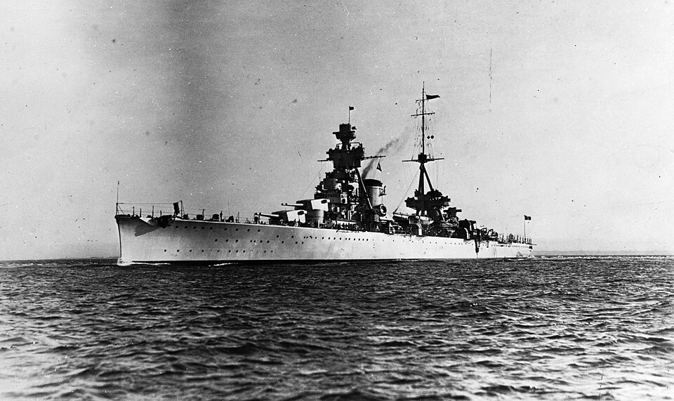

Trieste
Crucero de Italia, perteneciente a la clase Trento. Operó en el Mediterráneo y protegió convoyes al norte de África.

Diseño y función
Trieste pertenecía a la clase Trento. Crucero pesado para escolta y combate de superficie. Sus prestaciones se detallan en la tabla técnica, con las fechas o condiciones disponibles en la referencia.
Operaciones y trayectoria
Operó en el Mediterráneo y protegió convoyes al norte de África. Fue torpedeado durante una de esas misiones y necesitó reparaciones antes de regresar al servicio.
Destino final y conservación
Hundido por un ataque aéreo en La Maddalena en abril de 1943. España compró posteriormente el casco, pero su conversión en portaviones no se realizó.